Aviation is about extremes:
This tutorial is based on the Cessna 172p which is the default airplane on lots of flight simulators and a great airplane:
Possibly take a quick look at the following articles. You may feel the need to come back to them later. They contain answers to questions that can arise while reading this tutorial. The first ones show the airplane’s main parts and controls:
I did my best not to tell too much nonsense. I apologize for the bad habits or reflexes you may get due to this tutorial. It contains for sure some ugly mistakes. Maybe come back in some time, as I make frequent changes to better it.

Most airplane airports should fit but in this tutorial I assume you are using FlightGear’s traditional airport of San Francisco (KSFO):

In the final dialog maybe best cancel all display options. Ask for a flight at noon (your choice, but best a moment with the Sun still up). (The first time you use FlightGear, pick “noon” in the drop list, even if it is already selected.) Best start with a little display window of 800 × 600. JLater on you can try to add options and ask for a wider window. Press the Run button and the flight simulator window should start:

(If you get problems when you run version 0.9.9 of FlightGear on your Windows system, try installing version 0.9.8. It is available inside the FTP mirrors mentioned at the top of the FlightGear download page.)
(By a parallel way, volunteers are needed to compile future source code pre-versions
of FlightGear and test them on their computer. See
http://www.flightgear.org/Docs/Tutorials/fg_cygwin/fgfs_cygwin.pdf and
http://www.flightgear.org/docs.html for documentation.)
(If you get problems under Windows Me; the flight simulator suddenly stuttering, too few images per second... try killing all tasks except Explorer and Systray before you launch FlightGear. (If one of the tasks you kill is an antivirus or such protection software, this is a security risk.) Also, on one Windows Me machine, a FlightGear of 800 × 600 yielded good results, while a lower resolution of 640 × 480 triggered awful FPS drops and stutters (Frames Per Second).)
If you don’t use the -timeofday=noon option, it often happens that FlightGear starts in a night environment. To get a daytime environment, use the Weather menu. Choose Time of day In the dialog box ask for say Noon. Then click Dismiss:

(If FlightGear is available in your KDE or Gnome menu, you can edit the FlightGear launch icon properties and change the simple fgfs fgfs command to something like -geometry=1024x768fgfs - timeofday=noon or whatever command options you require. You can use any other resolution you want instead of 1024x768. (I try to keep a 4 × 3 ratio.))
Once FlightGear is started you see this window content and you hear the sound of an engine:

The airplane engine is on, at low power. The airplane trembles a little, yet it doesn’t move.

Type key v, to see the aircraft from the outside. Type v kseveral times, till you get back inside the aircraft. (Typing V makes you cycle backwards through the views.):

| ! | Each time before you step inside a real airplane, you have to inspect the airplane all around to check every part of it. You make sure nothing is hampering the moving parts, nothing obstructing the instrument openings… |
Hold the Page Up key down for eight or so lengthy seconds. You hear the engine sound rise.
The airplane starts moving. It drifts to the left, accelerates, rises in the air, banks to the left, falls to the ground, hits it, rises again and crashes.
Maybe you wish to see a replay of this crash: use the View menu, choose Instant Replay, then click the Replay button at the bottom of the dialog window. (Use v and V to see the airplane from the outside.) The picture below shows the end part of the flight. (Type key F3 to make a snapshot. Key F10 to remove the menu bar.)

Close the FlightGear window and start a new FlightGear window.
In order to fly straight you need the airplane’s control yoke:

Move the yoke by moving the mouse. For this you need to be in mouse yoke mode. Get in that mode by clicking the right mouse button. The mouse cursor becomes a + sign. Move the mouse and see the yoke moving accordingly. Type v to see the plane from the outside. Again move the mouse and see the tail elevator moving and the ailerons at booth wings ends. (Type x a few times to see the airplane from a closer point of view and better see the ailerons moving up and down. Type X to zoom back out. Ctrl-x for default zoom. Type V to get back inside the plane.)
| ! | Each time you start flying a real airplane, you have to visually check that moving the control yoke makes the ailerons and elevator move. |
One more click on the right mouse button gets you in mouse view mode. The mouse cursor becomes a ↔. sign. This allows you to move your virtual head all around. Click the left mouse button to center the view back in. A third right-click will bring you again in standard mouse pointer mode.
The right mouse button cycles the mouse through three modes:
Restart the flight simulator, right-click to put the mouse in control yoke mode (+pointer shape) and put the engine throttle on maximum by holding Page Up down. Do not try to keep the airplane rolling straight on the runway using the mouse/yoke. Let it drift leftwards. Wait till it rises in the air. Then use the mouse to try and get the airplane to fly straight. (If you want to control the airplane on the ground see section 7.5.)
You have to prevent the airplane from banking to the left:

Prevent it from banking to the right:

Prevent it from plunging to the ground:

Prevent it from raising its nose in the air (and the stall warning siren from yelling):
Try to fly more or less straight, with the horizon stable above the airplane nose:

Whatever your skills at video games or maybe even air combat simulators, you won’t succeed. The airplane will crash, probably even faster than when you didn’t try to control it. This is the moment where most candidates get desperate and abandon trying to fly a simulator or a real aircraft. Just hold tight. Keep trying. Five minutes every day. And read the technical explanations below:
Most awful is this error: when the airplane plunges to the ground, you move the mouse forwards (push the yoke). Because you want to move the airplane’s nose upwards. Actually you have to do the opposite: move the mouse backwards (pull the yoke).
Reciprocally, when you want the airplane’s nose to dive, you must move the mouse forwards. This can seem odd, but all airplane control yokes are designed that way. You have to get used to it. (Little mouse moves have strong effects on the airplane. Maybe decrease the mouse speed for your first virtual flight attempts.)
A visualization may help: imagine a soccer ball is on your desk and you “glue” your hand on top of it. If you move your hand forwards the ball will roll and your hand will plunge to the desk. If you move your hand backwards the ball will roll back and your hand will now be directed to the ceiling. Your hand is the airplane:

A second error is when you assume the control yoke bank imposes the airplane bank. In other words, you believe if the control yoke is level, the airplane will fly level. This is false. Actually the yoke bank imposes the speed at which the airplane banks. If the airplane is banked 20∘ to the left and the control yoke is level, the airplane will stay banked at 20∘ left forever (roughly speaking). If you want the airplane to bank back to level, you have to turn the control yoke slightly to the right (move the mouse slightly rightwards) and keep it slightly to the right for a while. The airplane will turn slowly rightwards. Once it is level with the horizon, put the control yoke level too. Then the airplane will keep level (for a short while).
A third error is: you try to find “the right position” for the yoke/mouse. You try to find the fine tuning that will leave the airplane fly straight. Actually there exists no such ideal yoke position. The airplane is unstable. You constantly have to move the mouse a little bit to correct the airplane’s attitude and keep it flying straight. This may seem a stressing nightmare but you will become used to it. Just like with driving a car. After a few months you will even no longer notice you are guiding the airplane to fly straight. (You can use the autopilot to keep the airplane level during long flights.)
An important hint: don’t keep your eyes on the airplane instrument panel or on the control yoke drawing. Keep your eyes on the outside scenery and especially the horizon. Check the angle of the horizon and its height above the airplane’s white nose. The horizon line and the white airplane engine cover are your main flight instruments. Look at the instrument panel only once in a while.
(While the mouse is in yoke control mode (+ pointer shape), don’t move it close to the FlightGear window edges. It’s useless and awful things can happen. If you want to get the mouse outside of the window, first go back to standard mouse mode by clicking two times on the right mouse button.)
You can also control the yoke using the four keyboard arrow keys or the keypad 8, 2, 4 and 6 keys.
You may hear beeping sounds while flying around the airport. Those are landing aid signals. Don’t pay attention to them, they don’t warn for a danger.
You master the thing if, while you are flying straight, the airplane very steadily climbs in the air. Next step is to keep the airplane at more or less constant altitude or make it descend slowly then rise again slowly.
The altimeter instrument is at the middle top of the instrument panel. The long needle shows hundreds of feet, the short needle shows thousands of feet. Hence the altimeter below shows an altitude of 300 feet. That makes roughly 100 meters.

Beware: an altimeter does not automatically show the absolute altitude above sea level. You have to tune that in. See the little black knob on the lower left side of the altimeter. Start FlightGear and stay on the ground. Click (in normal mouse mode) inside the black knob. A click on the left half makes the altimeter turn back. On the right half the altimeter turns higher. Use that little knob to tune in the altitude. The principle is you use the knob when you are sure about the altitude. If you know you are at 1,100 feet altitude, tune in 1,100 feet on the altimeter…(Clicking with the middle mouse button makes the knob turn faster. Type Ctrl-c to see the two button halves highlighted.)

Also keep in mind the difference between “altitude above sea level” and “altitude above the ground”. If you fly above Mount Everest at an altitude of 24,000 feet above sea level, then you are at 0 feet above the ground. (That’s why the HUD displays two altitudes.)
Once you are able to fly straight, even just approximately, you can begin to learn to turn. The principle is simple:

Don’t overbank. 20∘ is a good bank to get a steady and reliable turn. This it what the turn coordinator is used for. On the picture below the indicator shows the airplane is banked 20∘ to the right. This is just fine to turn to the right:
Try this out: keep the airplane banked around those 20∘ for a few minutes and look at the outside. You will see the same ground features appear again and again, every 120 seconds. This shows you need 120 seconds to make a 360∘ turn (or 60 seconds for a 180∘)turn). (This is utterly important when navigating: whatever speed the airplane is flying, if you bank at 20∘ you always need 60 seconds to make a 180∘ turn. Whatever the speed or altitude. The bank indicator and the clock are essential navigation instruments.) (Note there seems to be a small error on FlightGear: a 180∘ takes only 50 seconds instead of 60.)
So, by banking the airplane to the left or to the right, you make it turn to the left or to the right. Keeping the airplane level with the horizon keeps it flying straight.
(The little purple ball in the bottom of the turn indicator shows the sideways forces. If you turn neatly (using the rudder a little bit (see below)), the ball will remain centered. If the ball is pushed say rightwards, this means you the pilot too are pushed rightwards. Like in a car turning to the left. During a neat turn in an airplane, even a strong turn, the passengers never endure a sideways force. They are only pushed a little harder on their seats.)
By experimenting you will notice you easily get fast and spectacular turns by banking the airplane to strong angles and pulling on the yoke. It would be mad to do this with a real airplane if you are a beginner or if you have passengers aboard. Anyway one of the trainings to become a pilot is to make the airplane bank up to 60∘.
Each time you start the flight simulator, you have to decide whether you are going to learn flying or just get fun doing mad things. There is nothing bad with the fun. The more fun you make, the better understanding of the aircraft you get. That’s one use of a flight simulator and it’s good for your security. But you also have to train calm and realistic flying. Either you make a mad flight or you make a serious flight to mimic a real flight. Don’t mix these two modes.
The picture below shows the tachometer instrument. It displays how many hundreds of Rotations Per Minute the engine is doing:

Start the flight simulator. Type the Page Up key a few times, till you get the engine rotation speed to 1,000 RPM (like displayed above). (Typing the Page Down key decreases the engine speed.)
At roughly 1,000 RPM, the airplane will roll on the runway, but it will not accelerate nor take off.
Type the “.”key (Shift-; on Azerty keyboards). The airplane will make a sudden little turn to the right. If you keep the “.”key down the airplane will halt. When you type the “.” key, you activate the brake on the right wheel of the airplane. That makes the airplane turn right and halt.
To activate the brake on the left wheel, use the “,” key.
The “,” and “.” keys simulate two brake pedals located at your feet on a real airplane. This way you can control both the speed and turn of the airplane on the ground. (Some airplane, like the Hunter, can turn on the ground only by using this method.)
(For the hackers amongst you who own an Azerty keyboard and want to tune in
something more practical than “,” and “Shift-;” for the differential brakes: being
root, edit file keyboard.xml (it is located at
/usr/share/games/FlightGear/data/keyboard.xml on my computer).
Around line number 300 you should find two lines
<key n=~44~> and
<name>,</name> and a little below two other lines
<key n=~46~> and
<name>.</name>. They are explicitly followed by lines mentioning them as “Left
brake” and “Right brake”. Change the first two lines to
<key n=~59~> and
<name>;</name> and the two further below to
<key n=~58~> and
<name>:</name> to get “;” and “:” for the differential brakes. (59 is the ASCII code
of symbol “;” and 58 is the ASCII code of symbol “:”.))
The brakes can be very useful when taxiing slowly on the runway. Another (complementary) method exists: you can use the airplane front wheel. In a real airplane this is done by pushing the rudder pedals with your feet. You push with your feet on the side you want to turn towards. In FlightGeartwo ways exist to control the rudder pedals:
Start the simulator, Type v or V to view the airplane from the outside and keep x down a couple of seconds to zoom on the airplane. Look at the front wheel and keep keypad 0 down. Then keep keypad Enter down. See the front wheel turn. Click on the right mouse button to get in yoke control mode (+ pointer shape). Keep the left mouse button down to get in rudder control mode and move the mouse to the left and to the right. Note that the rudder, that big vertical control surface at the rear of the plane, moves together with the front wheel.
I tend to control the rudder pedals using the mouse when the front wheel is on the ground and using the keypad 0 and Enter keys when the front wheel no more touches the ground. In other words: I keep the left mouse button down when the front wheel touches the ground. This allows for a precise and easy rudder control on the ground. I release the left mouse button when the front wheel no more touches the ground. Then I use the keypad keys 0 and Enter to control the rudder.
A drawback of FlightGear is that you don’t see the position of the rudder pedals. To see it, two methods are available:
(Type h several times to toggle between two HUD colors and no HUD. Type H to
change the HUD color intensity. Type I to get a simpler HUD (my favorite) (ito get
back standard HUD). The sequence of keys I use to get my favorite HUD is h H I. The
picture below shows this HUD. The uppermost and large scaled green indicator is the
compass. Just below it is the horizontal yoke/mouse/ailerons position. The arrow shows
the
yoke/ailerons is centered. At the full right of the picture is the engine throttle
lever position indicator. The arrow at its bottom shows the throttle is tuned to
minimum. At the full left are the trim and vertical yoke/mouse/elevator position
indicators (the trim is on the left side, the yoke is on the right side). The short
green texts at the top of the picture, left and right from the HUD compass, are
the plane GPS position. They are almost unreadable on a standard 800×600
window like below. (Either tune in a black HUD (H) or use a larger window.
1200×900 is fine.) The green HUD texts at the bottom of the window, left and right,
contain valuable data. (I don’t use them in flight. I rather use them during flight
replays.))
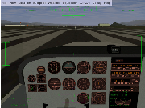
This is the airspeed indicator, expressed in knots:
A knot is 1.85325 kilometer/hour. So, if you want to have a rough idea of your speed in flight expressed in km/h, multiply the knots displayed by 2. A knot is 1.15115 miles per hour, so very roughly, 1 knot is 1 mph. (Be careful with these roughnesses. Multiplying by 2 instead of 1.85325 makes a difference of 8%. Now, for example: landing at 65 knots instead of 70 knots makes the landing quite different, even when this is only a difference of 8%…And landing at 80 knots, which is only 14% more than 70 knots, can get you into real trouble.) (Note some aircrafts’ airspeed indicators display mph instead of knots.)
Note the airspeed indicator displays the speed of the aircraft compared to the surrounding air, not the speed compared to the ground like a car speed indicator does. If the plane is halted on the ground and there is a 10 knot wind blowing towards its face, the airspeed indicator will display 10 knots airspeed, although the plane doesn’t move…
When the airplane rolls over the runway at more than 40 knots, you must prevent the front wheel from touching the ground. During take off, once over 40 knots you make the front wheel leave the ground by pulling a little bit on the control yoke (on the mouse).
The picture below shows the front wheel slightly lifted. Don’t overdo this. Keep the airplane’s white nose cover well below the horizon. You just need to lift the plane’s nose a little.
The reason why you must raise the front wheel is it is not designed to roll at high speeds. It would shimmy.
Question: if the front wheel no longer touches the runway, how do you steer the airplane? Answer: still using the rudder pedals. Indeed the rudder pedals are linked to the tail rudder, that big vertical moving part at the tail of the plane:
At air speeds above 40 knots, the rudder is adequate to steer the airplane.
The rudder pedals command both the front wheel and the rudder at the airplane’s tail. So, just move the rudder pedals...
Note the front wheel and the tail rudder don’t make the airplane turn exactly the same way. So when the rudder takes over the front wheel, you must adapt the rudder pedals angle. That means fast typing keypad 0 and keypad Enter (or hold the left mouse button down and tightly control the rudder with the mouse).
Once you trained all this, you are able to keep the airplane straight on the runway when taking off.
An advice: say the airplane is heading too much to the right. You type keypad 0 a few times to make it turn back to the left. Well don’t wait till the trajectory is corrected. Type keypad Enter a short while before the airplane reaches the direction you wish. Otherwise it will go turning too much to the left. (If you use the mouse, things are much easier and precise.)
So, two methods exist to steer the airplane on the ground: the differential brakes on the side wheels and the rudder pedals. This is essential to aviation: at least two ways to perform each important function. This is called redundancy. If one method fails, you use the other method, even if that second method is not optimal. Sometimes three or even more ways exist to perform a given task.
Don’t overdo turning on the ground, especially at high speed. That would make the plane fall sideways and be damaged. Make use of the simulator to try this out (fun mode).
(Why does the airplane drift to the left when it rolls on the ground, making you have to compensate with a little push on the right rudder pedal (about two keypad Enter hits)? Main reason is the flow of air produced by the propeller. It blows along the airplane body, but also it turns around the airplane body. The upper part of that slight vortex pushes the vertical tail to the right. That makes the front head to the left.)
You can center all yoke and rudder controls by typing 5 on the keypad. This is a good preflight precaution. Sometimes it can “save your life” in flight. (Note the trim is not centered by keypad key 5 (see below).)
A little problem in flight was (in version 0.9.9 and earlier) the troubles!mouse drifting away from the center of the screen. After a while, you got the yoke centered by placing the mouse quite far from the center of the screen. Two solutions exist:
Before you type F3 to make a snapshot, better put the mouse in standard mouse pointer mode. Only then type F3, then Enter to close the little report window. Then click the right mouse button to get back to mouse yoke control (+ shaped pointer).
Indeed. You can use the wing ailerons (steered by the yoke/mouse) or you can use the tail rudder (steered by the rudder pedals / the keypad keys /0 and Enter.
Why these two ways? Because we need redundancy, of course, but especially because they are very complementary:
Using the yoke/mouse/ailerons allows for efficient, fast, reliable and comfortable turns.
So, you tend to turn by using the ailerons in normal flight and by using the rudder when close above the ground at low speed. Yet one method never completely cancels out the other. You still need the rudder at high altitudes and speeds. Reciprocally you have to use the ailerons a little bit when close to the ground, to keep the wings level with the horizon. (Actually you must use the ailerons even when taxiing slowly on the ground, when there are strong side winds, to prevent the airplane being tilted and blown aside.)
Best never make quick and strong movements with the rudder. On the ground at high speed this can make the airplane tumble aside. In flight at low speed it can cause a very dangerous stall. In flight at high speed it can cause all kinds of aerodynamic and physical discomfort. Try to make slow movements with the rudder. Make slow tunings at a time and take your time to stabilize their consequences. (Only the ailerons allow for nervous movements.)
I recommend you train to turn with the rudder in flight. Fly at a low speed of about 70 knots. Try to keep the altitude stable by increasing and decreasing the engine power. Maybe best a quite low altitude. Use the rudder to get to a target, to maintain a heading, to make turns to a new target... See how the plane yaws. Learn to anticipate rudder control. Don’t try to make steep turns. Use the yoke/ailerons to keep the wings level constantly.
Wieheisterology, from German “Wie heiflt Er” – “What’s that name”. This section is about gauges, switches and controls of the aircraft. It’s like the buttons of a video game control pad: you can play a game with just the arrow buttons but if you want to get the fun out of the game and beat serious opponents you need to learn and train the functions of the other buttons. The same, you can take off and land a basic airplane with just the engine throttle and the yoke but you need all the controls to make a secure and efficient flight. You need to have at least a basic understanding of the physics behind the controls. In emergency situations you have to understand how the controls work to be able to cope with their deficiencies.
An airplane engine is a technological wonder. It is the most powerful, efficient, lightweight and reliable fuel energy plant commonly available.
On the bottom left, below the instrument panel you find the magneto switch/engine starter:
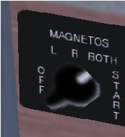
To see the switch, either type P to get the schematic instrument panel or type Shift-x to zoom out (x or Ctrl-x to zoom back in).
Move that switch with the { and } keys (use the Alt Gr key on Azerty keyboards).
You probably know the fuel inside a car engine is ignited by electric sparks. A car engine contains an electric magneto to create the electricity for the sparks. An airplane engine contains two such magnetos: the “left” one and the “right” one (redundancy...). When you put the magneto switch on OFF, both magnetos are switched off. Hence the engine can’t run. (Putting the magneto switch on OFF is a way to shut the engine down. Yet you shouldn’t use it because it causes residues to deposit inside the cylinders.) When you put the magneto switch on L you are using the left magneto. On R you are using the right magneto. On BOTH you use both. In flight you have to be on BOTH.
Why do you have the possibility to use the left and right magnetos alone? This can seem useless, since you fly using both. The reason is each time you start the engine in order to fly, you have to verify each magneto separately. So you put the magneto switch on L, then on R, slowly. That way you check each of them. If everything is OK, then you put the magneto switch on BOTH. Should one of the two magnetos fail in flight, the other one will keep doing the job. The failure of one magneto is rare, the failure of both together is almost impossible. If during the pre-flight check it appears one of the magnetos fails, you have to cancel the flight.
You surely already started the simulator and typed { to shut the engine down. So now you want to start it back on. Type } three times in order to put the magneto switch on BOTH. To start the engine press the Space Bar. Keep it pressed a few seconds, till the engine is started.
You can also turn the magneto switch and start the engine by clicking left and right of the switch (normal mouse mode). Type Ctrl-c to see the two click sides highlighted by yellow rectangles.
If you turn the switch to OFF, the engine noise stops. If you quickly turn the switch back to L, the engine starts again, though you didn’t turn the switch to START. The reason is the propeller was still rotating. You should have waited till the propeller came to a halt. Then, placing the switch on L, R or BOTH won’t start the engine. (Once the engine is halted, always place the magneto switch to OFF.)
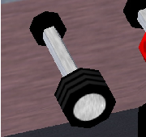
You already know you increase the engine power by pushing that throttle lever in (Page Up key). You decrease the power by pulling the lever out (Page Down key). You can also click left and right of the lever (middle mouse button for quicker moves, Ctrl-c to highlight the left and right halves).
What means “increase the power”? Does it mean you increase the amount of fuel delivered to the engine? Yes, but this is not enough to fully understand what you are doing. You need to be aware that the engine is also fed with a huge amount of air. The engine’s cylinders burn an intimate mixture of fuel and air. Fuel alone wouldn’t burn. Only a mixture of fuel and air can detonate and move the engine pistons. So when you push the throttle in, you increase both the fuel and the air fed to the engine.
The amount of air compared to the amount of fuel matters a lot. The proportion of the two has to be tuned closely. This is the purpose of the mixture lever. The picture below displays the mixture lever, far too much pulled out:
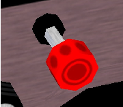
When the mixture lever is fully pushed in, you feed the engine with an excess of fuel. When the lever is pulled out completely, there is an excess of air. The correct position is inbetween. Usually quite close to fully pushed in.
When you start the engine and when you take off, you need a fuel-rich mixture. That means the mixture lever pushed in. A fuel-rich mixture allows the engine to start easily. It also makes the engine a little more reliable. The drawback is that a part of the fuel is not burned inside the engine. It is simply spilled away. This makes the engine more polluting, it decreases the energy the engine can deliver and it slowly degrades the engine by causing deposits of residues inside the cylinders.
Once in stable flight, you have to pull the mixture lever a little, to get the optimal mixture. Check this out by doing the following. Start the simulator. Put the parking brakes on with key B (that is Shift-b). Push the throttle in to its maximum. The engine RPM are now close to the maximum. Slowly pull on the mixture lever (using the mouse in normal pointer mode). You will see the RPM increases a little. You get more power, without increasing the fuel intake. You spill no more fuel in the engine and it pollutes less. If you continue to pull the mixture lever, the RPM will decrease back away, because now there is too much air. The excess of air slows the explosions down inside the cylinders and decreases the explosion temperature, hence the thermodynamic yield decreases. You have to tune in the optimal mixture. You can check you get the optimal tuning by the fact you get the highest RPM. (Another method is to check the engine exhaust temperature. Roughly, you need to get the highest temperature.)
Question: why a mixture lever? A car contains no mixture lever and drives fine. There are two answers. First is a car is not an optimal device. An airplane is, hence it needs fine tunings. Second and more fundamental answer is a car operates at constant altitude. So the mixture tuning can be tuned in once and forever by a garagist. A plane rises in the air. The higher the altitude, the less dense the air is. Hence the openings or pumps that let the air into the engine have to get wider or pump stronger in order to inject the same weight of air into the cylinders. So when you gain altitude, you have to pull a little on the mixture lever to keep an optimal fuel/air mixture. When you descend back to the ground, you have to push the lever back in. (Actually, if you live at sea level and you move to a new location high in a mountain country, and you take your car with you, you should ask a mechanic to adapt the mixture tuning of your car. Should you drive your car back to sea level, it will drive fine but it will be less powerful and more polluting…I suppose modern cars contain some electronics to control this.)
You have to take the mixture lever seriously. It allows you to burn less fuel for the same speed and distance, hence to fly farther away and pollute less. It can also cause serious trouble. Suppose you go flying at high altitude and pull on the mixture lever accordingly. Then you descend back in order to land. But you forget to push the mixture lever back in. The fuel/air mixture will become far too rich in air and the engine will simply halt. You may think the engine is failing and panic, while you only have to push the mixture lever back in…
When landing, you have to tune back in a mixture that is a little too rich in fuel. This means pushing the mixture lever in. That way the engine becomes a little more reliable and will be better adapted to a decrease in altitude.
I wrote above that placing the magneto on OFF is not the right way to stop the engine. The right method is to pull the mixture level. First pull the throttle out completely, to get the engine to minimum power and fuel consumption. Then pull the mixture lever, till the engine stops because the mixture contains too much air. This ensures the engine doesn’t get poised by spilled fuel residues. Finally, turn the magneto switch to OFF to ensure the engine won’t start back accidentally (for example because strong wind makes the propeller turn).
An important warning: you may think the RPM indicator reflects the engine power. Wrong. Two things make the RPM increase: the engine power and the airplane speed. To check this, fly to a given altitude then pull the engine power to minimum. Try out diving to the ground then rising back to altitude. You will see the RPM varies strongly. It rises while diving and decreases while rising, together with the plane speed. Though you didn’t tune the engine power. One pitfall of this is when you intend to tune the engine power in for landing. Suppose you’re flying fast. You know the ideal RPM for landing is around 1,900 RPM. So you pull the throttle till you get 1,900 RPM. You think you tuned in the appropriate RPM. You think you shouldn’t bother any more about it. But now the plane’s speed decreases. Hence the RPM decreases. A few minutes later, you get the low flight speed you wanted. You don’t see the RPM is now at 1,000. Far too slow. You will either lose altitude or stall. Or both. So, be cautious with the throttle and with the RPM indicator. Either pull on the throttle more steadily or be mentally prepared to push it back in quickly.
Fly with full engine power. Diving the nose a little makes you lose altitude and raising the nose a little makes you gain altitude. You may think this is quite logical. The plane travels in the direction it is heading; the direction the propeller is heading. This is not the appropriate way to think about it. It would be fine for a rocket, but not for an airplane. A rocket is lifted by its engine, while a plane is lifted by its wings. That’s a huge difference.
Get a big rigid square of cardboard, hold it horizontally in your hand with your arm stretched out and make it do fast horizontal movements while rotating your torso. When the cardboard moves flat through the air, it experiences no lift force. If you twist your arm slightly to give the cardboard a slight upward angle, you will feel it tends to lift in the air. There is an upward force acting on the cardboard. That’s the way a wing holds a plane in the air. The wings have a slight upward angle and lift the airplane. The more angle you give the cardboard, the more lift force. (Till you give it too steep an angle. Then you will rather feel a brake force. The cardboard is “stalling” (see below).)
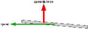
What matters is the angle the wings travel through the air. That’s the angle of attack.
I wrote above that when the wings travel through the air with no angle, they don’t lift. This is false. It would be true if the wings were a flat plate like the cardboard. But they aren’t. The wings are a slightly curved airfoil. That makes them create a lift even when traveling through the air at no angle. Actually, even with a little negative angle of attack they still create a lift force. At high speed the airplane flies with the wings slightly angled towards the ground! This is not very important…
The angle at which the wings travel through the air matters. Something else matters too: the speed. Take the cardboard again in your hand. Hold it with a given slight angle and don’t change that angle. Check that the faster you move the cardboard, the more upward lift force it experiences.
To make things a little more complicated: when rising in the air, the airplane tends to lose speed. When descending, it tends to gain speed.
That’s all a matter of compromises. If you want to fly at a constant altitude and at a given speed, you will have to tune both the engine power and the yoke/elevator (or better: the trim (see below)), till you get what you want. If you want to descend yet keep the same speed, you have to push the yoke a little and decrease the engine power. And so on. You constantly have to act both on the engine power and on the yoke. (During a normal flight one doesn’t make things that complicated. Simply tune in a comfortable engine power level then forget about it and rely on the yoke and trim for the altitude.)
A very interesting exercise you can perform with the simulator is to fly straight with full engine power. Get maximum speed while keeping in horizontal flight. Then you decrease the engine power to minimum. And you pull steadily on the yoke to keep the plane at constant altitude. The plane slows down steadily, meanwhile you pull more and more on the yoke. Since the speed decreases the lift of the wings would decrease, but you compensate the loss of speed by increasing the wing angle of attack. (This proves the plane does not necessarily travel in the direction its nose is heading. In this experiment we make the nose rise in order to stay at constant altitude.) Once the plane is severely slowed down, and the nose is strongly heading upwards, you may hear a siren yell. That’s the stall warning (see below). The angle of attack of the wings is too strong. The wings are now braking the airplane instead of lifting it. The plane quickly loses altitude. Whatever you pull on the yoke, you’re falling. The only thing you can do is push the yoke forwards, make the nose dive, gain speed and glide towards the ground. Possibly push the engine throttle back in to full power.
Question: is it better to control the airplane’s speed and altitude with the yoke or with the throttle? Answer: it depends on what exactly you intent to do and on the situation you are in. In normal flight, as said above, you tend to set a comfortable engine power level, forget about it and rely on the yoke and trim. During take off and landing the procedures are quite strict about the use of yoke and throttle. You do the opposite: control the speed with the yoke and trim, control the altitude and descent speed with the engine throttle. That will be discussed in sections below.
For long range flights, to spare fuel costs or for ecological concerns, one can fly a plane in “economy mode”. The you try to tune the wings angle of attack so they brake the less, you try to tune the engine, you try to find the most appropriate speed and altitude... Its all a matter of compromises. You will often fly slower than the usual cruise speed.
The flaps are situated at the rear of the wings, aside the plane’s body:
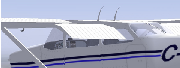
Deploy the flaps and pull them back in by using the flaps control lever:
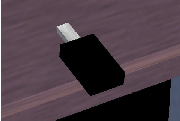
You can either click on it with the mouse or use the [ and ] keys. Key [ to retract the flaps one step, ] to deploy them one step. Type v to view the plane from the outside and try out [ and ]. (On the schematic instrument panel the flaps lever is located at the lower right.)
There is a security risk. Do not deploy one flaps step above 110 knots. Do not deploy two or three flaps steps above 85 knots.
The flaps brake the plane at high speed. This is one more reason not to forget to pull the flaps back in once you fly above 85 or 110 knots.
My favorite way to know the flaps position is to type Shift-right arrow. Then quickly Shift-up arrow to get back to front view. Another method I use is to make sure the flaps are fully retracted by quickly typing [ several times. Then type ] the exact amount of times needed.
The role of one flap step is to increase the wing lift. The wing lifts more at a given speed. Hence you will get in the air a little sooner during take off. It also has the effect to make the plane fly with the nose a little more downward. This is handy: it allows to keep an eye on the runway while rising in the air. It allows a better view on the runway during landing.
The role of two or three flaps steps is to brake the plane. This is mandatory when landing, because the airplane glides very well. If you cut down the engine power completely, sure the plane will descend, yet too slowly. You need to deploy two or three flaps steps in order to brake and really descend towards the ground.
The fact that the flaps brake during landing makes you need more engine power during the landing. This can seem odd. Why not simply throttle the engine down to minimum and use less flaps steps? The answer is it’s better to have a strongly braking plane and lots of engine power, because then the plane reacts faster to your commands. Should the engine fail, then just retract flaps as needed…
Trying to take off with two or three flaps is a bad idea. This can sound fun, but beware: suppose you deployed one flaps to take off. Yet you forgot to pull the flaps back in. Later on you encounter a emergency situation and you need to gain altitude very fast. You deploy one flaps step. Actually you add one flaps step to the flaps step already out. So now you have two flaps steps. Hence the flaps are braking and you fail to gain altitude…Whenever you feel the plane is behaving really odd and seems unable to rise in the air, or even keeps falling whatever your efforts and the engine power, think maybe you deployed more than one flaps steps.
Redundancy…What can you do if the flaps don’t deploy and you really need to brake? Answer: slowly push the rudder pedals on one side. This will make the plane present its flank to the air stream and brake. Compensate the turning by using the ailerons (yoke). This is not a very comfortable way to brake and you should train it before using it close to the ground. (I tried to use both the full flaps, the rudder to an extreme and the throttle to minimum. You really loose altitude very quickly…)
A stall is an emergency situation, at whatever altitude. It means the plane is flying too slowly hence the wings travel through the air at too strong an angle. The wings suddenly start braking the plane instead of lifting it. It is especially dangerous when close above the ground. It is dangerous even at high altitude because you lose part of your control over the plane.
During a normal flight, a stall should never occur. As a pilot you have to constantly keep the plane well above stall speed. Once the stall siren yells, it means things already have gone very bad.
Some little airplane like the Piper Cub are designed to land using a near stall. Planes like the Cessna 172 are designed to make stalls less likely to occur and less deadly when they occur. That’s for example one reason why the wing extremities are square. The Cessna is still controllable during a stall and a simple stall and fast descent to the ground should not kill the passengers. (Wind turbulences or a strong bank can make things go worse…)
A stall can make some airplanes go into a deadly spin. Fly for example the F-16 Falcon to some altitude, throttle the engine down to minimum and pull steadily on the yoke to keep the same altitude while decelerating…One problem with the legendary WWII fighter plane Spitfire was during too tight turns the inside wing would suddenly stall completely but not the outside wing.
What can you do during a stall? The procedure can be very different on different planes. You should not trust this tutorial, especially not for such a serious matter. Anyway:
Stall-elegant airplanes like the Piper J3 Cub and the Cessna 172 tend to have roughly rectangular wings. While stall-ugly airplanes like the F-16 Falcon and the Cessna Citation II tend to have trapezoidal wings. The advantage of the trapezoidal wings is they have a better aerodynamic yield. They allow to fly more distance with a same quantity of fuel. The ends of the rectangular wings engender strong turbulences. Those turbulences brake the plane but also they keep the air flowing correctly once the plane stalls...
When you learn to fly a virtual plane, making it stall is a very good exercise:
Try to perform the exercices above with different airplanes. You will notice how elegant the Cessna 172p behaves. First time I tried a stall with the virtual Cessna Citation II, I was at 1,000 feet altitude, which is supposed to be safe. The plane suddenly fell from the sky like a tumbling stone. I was not able to stabilize the plane and it crashed. I was really frightened by that airplane. On second attempt I managed to stabilize before the plane hit the ground. Anyway, from now on I won’t fly a Cessna 172p and a Cessna Citation II with the same mood.
If you fly an unknown virtual airplane and wish to know the landing speed, a rule of thumb is you find out the stall speed by experimenting. Then you multiply that speed by a factor of 1.2 or more. (A friend who is Aerospace Engineer told me 1.2.) The stall speed of the Cessna 172p is 40 knots yet its imposed landing speed is 70 knots (minimum 65 knots). That makes a factor of 1.75…I made an experiment landing the virtual Cessna 172p at 50 knots. It virtually falls to the ground, at close to -1000 feet/minutes vertical speed. This seems very hard for the landing gear. Next, while approaching at 50 knots with the Cessna 172p, the runway and most of the ground are completely hidden. This obviously tells a higher speed is mandatory. I would recommend following rules to find a correct landing speed. It must be the lowest possible speed that satisfies all these conditions:
On big jet airliners the flaps make a lot of difference. Bear that in mind when you try to find the stall speed. Make the experiment with the flaps deployed, as they will be deployed during the landing.
The load of the airplane also changes the stall speed a lot, and therefore the landing speed. You land a fully loaded airplane at a higher speed than an empty one.
(Once you get used to landing different airplanes, you get a feeling for the landing speed of an unknown airplane. You just feel the airplane "wants" to land at that speed. I suppose this is because the airplane was designed to land at that speed.)
| ! | In a real airplane the sounds and vibrations tell a lot about the state of the airplane. When all vibrations stop, this means you are going to stall. Then push the yoke to get speed. |
The trim is that dark big vertical wheel with gray dots located at the middle below the instrument panel:
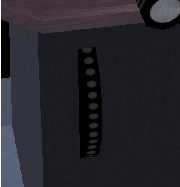
On FlightGear, the keys Home and End are used for the trim. The key Home rolls the wheel upwards while the key End rolls the wheel downwards. You can also click on the upper or lower half of the trim wheel (Ctrl-c for a yellow highlight). Possibly look at the plane from the outside (v or V and x) and move the trim while looking at the elevator.
In first approximation, the trim does the same as the yoke: it acts on the elevator. Turning the trim wheel downwards is the same as pulling on the yoke. Yet there is a key difference between the trim and a real yoke. If you tune the trim, it keeps that tuning. While if you pull or push on the yoke, it goes back to neutral once you release it.
Once in flight, you would keep the mouse/yoke at a given forward (or backward) position. That position is optimal to keep the plane at a roughly steady altitude. In a real airplane, this means you would constantly keep pushing (or pulling) on the yoke. That would be quite uncomfortable. This is where the trim falls in. You tune the trim to impose a default elevator angle. Then you no longer have to push or pull the yoke constantly. In other words: make a global rough tuning with the trim and occasional fast tunings with the yoke/mouse.
The trim is an important control. I tend to forget it, for two reasons. First is the mouse makes the trim virtually useless. This is quite unnatural of course. People with a force-feedback joystick/yoke will feel the need for the trim, as well as people flying real airplanes. Second is the trim didn’t operate on the particular version of FlightGear I was using until recently…
During take off the trim must be neutral. You have to check the trim is centered before every take off. Also if you abort a landing and start rising back to altitude, put the trim to neutral. Otherwise the plane may buck.
During landing, while flying at a constant speed of 70 knots and a constant altitude of 500 feet, the same applies as for a steady flight: try to get the yoke/mouse/elevator towards neutral position by tuning the trim. On the Cessna 172p this means trim on neutral (except when the plane is loaded). On the Cherokee Warrior II this means the trim a little “pulled”.
During the final dive, some people seem to let the trim as it is and use the yoke, others make the dive using the trim and don’t use the yoke/elevator. I don’t know which is best. I use the yoke.
To know the trim position, use the HUD (h, H and I) or the I-shaped indicator on the schematic instrument panel (P).
The trim movement is very slow. Be patient.
Lots of modern airplanes have a remote control for the trim: a little switch on the yoke, that you can manipulate easily with your fingers. So you don’t have to duck to roll the big wheel.
Four basic methods exist to know what direction you are flying:
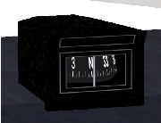
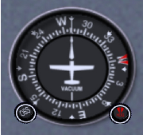
| ! | During a real flight in a real airplane, you are supposed to cross-check all direction indicators once in a while. |
Memorize the directions: North is 0∘, East is 90∘, South is 180∘ and West is 270∘.
By now I assume you are able to keep the airplane on the runway while taking off (rudder) and you’re able to fly straight, descend peacefully, gain altitude steadily, make gentle turns (yoke)…No need you perform this all perfectly. Yet a basic and approximate control of the airplane has been acquired.
Rules during take off:
So, you need to take off and rise in the air at a steady speed of around 75 knots.
Problem: since the front wheel is slightly lifted and the flaps are one step deployed, the plane will rise from the ground already at 55 knots. That’s well below the desired flight speed of 75 knots. What to do then? Answer: as soon the two rear wheels lift from the ground, push the yoke forwards a little. Keep the plane close above the ground. (The aim of this is: should a wind blow from the rear occur, the plane will fall from only a few feet hight.) Keep it close above the ground while accelerating, till a speed of about 70 knots is reached. Then switch to the opposite mode: now you must pull on the yoke to prevent the plane from going above 75 knots. Force the plane to rise in the air, so it doesn’t gain speed. Keep in control. If the speed goes below 75 knots, push a little on the yoke. If it rises above 75 knots, pull a little on the yoke. Till you reach 500 feet above the ground.
This is the procedure I use to take off. I assume you just started FlightGear; the airplane is at the start of the runway and the engine is turning at minimum power:
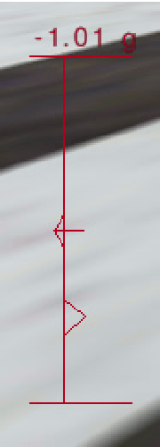

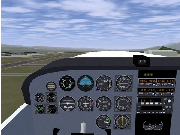
500 feet above the ground is the minimum flight altitude above open land. Above a city the minimum altitude is 1,000 feet.
If you take off from KSFO heading to the West, you have city areas in front of you and left of you. So, once you reach 500 feet above the ground, best turn to the right.
Don’t forget to center the rudder. If the rudder is pushed to one side, this will brake the plane. It makes the plane move sideways through the air, with its flank aerobraking.
Don’t forget to retract the flaps.
| ! | During a real take off you must keep in touch with the control tower. You also have to constantly look in all directions to check no other airplane is coming in your direction. |
An aviation classic is the ground effect. It’s the fact a wing lifts better when close above to the ground. That too makes the wheels leave the ground at quite a low speed, a speed at which the airplane cannot really fly. While you are accelerating a few feet above the runway, you are in ground effect. If you know about it, ground effect is an advantage because it makes flying close above the ground more secure. The airplane behaves a tiny little bit like a hovercraft. If you are not aware of the ground effect, it can cause problems. For example it can make you think the airplane has enough speed to rise in the air, while it has not.
| ! | During a real take off, if the engine halts below 500 feet, you are not allowed to turn and try to glide and land back on the runway. You only have enough height to try to turn and land back if you are above 500 feet when the engine halts. |
| ! | Before a real take off you have to go through check-lists. A checklists makes you verify, tune and tighten a list of items. You have to follow a long checklist before you enter the runway and a short checklist before you accelerate to take off. |
This is the checklist I follow when I take of the virtual Cessna 172p on FlightGear. It is very short compared to a real checklist. Anyway I know I can go into (moderate) trouble if I don’t follow it. I had to build up the discipline to follow it carefully each time:
When I was a boy, I had a simple yet fairly good flight simulator on my Sinclair ZX Spectrum home computer. I could do everything with it, except landing. I always crashed the plane, or reached the end of the runway before stopping. One day a real pilot saw me trying to land. He had never seen a flight simulator, but he had no problem to recognize each flight instrument and ground feature on the screen. He told me what to do. Decrease engine power, increase engine power, push the nose down, pull the nose up, turn a little left, turn a little right, get the flaps out…We made a perfect landing on the second attempt.
Just like for take off, landing is partly a procedure, partly rules you have to stick to. You have to adapt constantly.
Same basic rules apply as for take off, yet in reverse order:
(If you know what you are doing you are allowed to use a speed a little below 70 knots: 65 knots.)
Following rules are essential during the whole procedure of landing:
The reason why the yoke/elevator is used to tune the speed is this method allows for fast reactions and fine tuning. It is more important to tune the speed closely than the altitude.
If you are both a little too high and a little too slow, simply push the yoke a little and both problems will be solved together. No need to use the throttle. Use your mind...
You have to get aligned with the runway. That means your flight direction has to match the middle line of the runway (drawing (a) below). In order to arrive at this, don’t aim at the start of the runway (b). Rather aim at a fictitious point well ahead of the runway (c). And begin to turn gently towards the runway well before you reach that fictitious point (d). Note the turns and bankings you make for these flight corrections are often very soft. You wouldn’t even notice them on the turn coordinator. This is one example where you better rely on the outside horizon line than on the inside flight instruments.
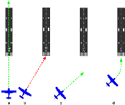
Try to get aligned with the runway as soon as possible. Constantly apply the alignment procedure. The closer you come to the runway, the better the alignment should become.
My favorite landing procedure for the Cessna 172p is roughly this one:
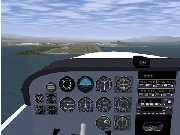
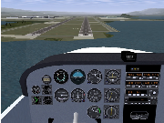
Once the plane is halted or at very low speed, you can release the b key (if you used it) and add a little engine power to taxi to the parking or hangar.
To shut the engine down:
To set the parking brakes in, type B.
You must be mentally prepared to abort landing anytime. Whatever happens: an order from the control tower, a wrong speed or landing angle, a wrong alignment with the runway, a strong blow of wind, birds flying over the runway…retract the flaps to one, push the engine to maximum, center the trim and get back to high altitude. Then either you restart the landing procedure or you go for another airport. The pride of a pilot is to make only safe landings.
Don’t try to find “the ideal distance” to start diving to the runway. The procedure above proposes you start diving when the white engine cover starts eating the runway edge (provided you fly at 70 knots with one flaps step) (the altitude doesn’t matter). Best is you train to land while starting the dive earlier and while starting to dive later. You need to be trained to increase or decrease engine power according to what is needed. During a real landing, depending on the airplane’s weight, the wind speed and other random things, the “ideal” moment to dive is unpredictable. As experience builds up, you will better feel the right moment.
If you want to make things simple for your first landing trainings, make use of the fact the runway at KSFO is very long. Wait a little more before you begin the dive: let the nose “eat up” the whole length of the leading part of the runway (let the successive pairs of white strips on the runway disapear below the airplane nose). Then lower the flaps to three steps and decrease the engine to minimum. Dive to keep the speed around 70 knots and try to keep aligned with the runway. You will end the dive quite far beyond the runway start and at a high vertical speed, but who cares. Make the final rounding. Keep aligned with the runway and try to fly close above it. Keep pulling more and more on the yoke/mouse, to keep the airplane flying. Yet avoid it rising in the air. Till the wheels touch the ground. Then just keep the airplane on the runway, using the rudder. Once the speed is below 40 knots, push the yoke/mouse and keep key b down to brake.
If you are a newbie, you probably won’t succeed to apply the procedure perfectly. My advice: invent your own, more simple procedure. Then regularly come back to the procedure listed here and read it again, to get hints and ideas to better your procedure. Till you get it. Also best read other landing procedures. Send me a mail if you find interesting differences. Analyze your own procedure. If it implies to fly at very low speed, it is dangerous because a blow of wind from the rear will make the plane fall. A probable problem with your procedure is the plane needs a lot of runway length to land. If you look at the runway start you will see there are successive groups of white stripes. I land the Cessna 172 always well before the last group of stripes. If you are a real beginner, your procedure surely will make the plane tilt over or crash once in a while. The procedure listed here is safe. Train your procedure, again and again. The more you train it, the more you will become able to use the one listed here. That’s the way I learned to land…
| ! | In a real airplane, you must keep in touch with the control tower constantly while landing. You will be contacted by the control tower or you have to contact it in some key parts of the landing. If you don’t contact the control tower just after landing, an emergency rescue team is immediately underway. If there is no good reason you didn’t contact the tower, you will really be in trouble. |
Maybe you’d like to train landing without having to take off and circuit in order to head for the runway and land. Type the command line displayed below in a terminal window to start the simulator in flight and heading for the runway. The airplane is placed 6 miles ahead of the runway, at an altitude of 1000 feet and a speed of about 120 knots.
fgfs –offset-distance=6 –altitude=1000 –vc=120
Possibly add –timeofday=noon –geometry=1024x768 jparameters if you
need daylight and a bigger window (choose anything you need instead of 1024 × 768 (I
favor 1200 × 900 an my screen)). FlightGear command line parameters are listed
in
http://www.flightgear.org/Docs/InstallGuide/getstartch4.html#x9-330004.4
(Note the parameters above make the airplane have some trim tuned in. Yet you need another trim tuning during the horizontal steady flight towards the runway. See the section 7.7.5 above, about the trim. If in doubt, just center the trim. On the Cessna 172p, a centered trim seems the right position.)
Once you are trained, you no longer need to do a long horizontal flight at 500 feet and 70 knots to get to the runway. Instead you can descend all the way from your flight altitude and at a higher speed. You should be able to get at 500 feet and 70 knots a short while before the final dive.
Landing at 65 knots instead of 70 knots allows to use a much shorter runway length. Yet to benefit from this you better train landing at 65 knots. It is quite different from landing at 70 knots.
The landing speed varies according to the load of the airplane. The more load of petrol, passengers and freight, the higher the optimal landing speed will be.
Think of a hot air balloon. Think of it as being in the middle of a gigantic cube of air. The cube of air may move at high speed compared to the ground, anyway the balloon itself is completely static in the middle of the cube. Whatever the wind speed, persons aboard a hot air balloon experience not the faintest blow of wind. (To pilot a hot air balloon you bring it at an altitude where the wind blows in a direction that more or less suits your needs.) The same way, an aircraft flies in the middle of a gigantic cube of air and only refers to that cube of air. The motion of the cube of air compared to the ground doesn’t bother the aircraft.
You, the pilot, on the contrary, do bother for the speed of the surrounding air compared to the ground. It can make you drift to the left or to the right. It can make you arrive at your destination much later or much sooner than planed.
When the wind blows in the same direction as you fly, the speed of the wind adds itself to the airspeed of the plane. Hence you move faster compared to the ground. You will arrive earlier at your destination and have less time to enjoy the landscape. (It sometimes happens that a jet airliner flying with a strong wind from the rear, moves faster than the speed of sound compared to the ground. Though it doesn’t brake the sound barrier.)
When the wind blows in the opposite direction you fly (towards the nose of the plane), the speed of the wind subtracts itself from the airspeed of the plane. Hence you move slower compared to the ground. You will arrive later at your destination and have more time to enjoy the landscape. (Some slow airplane flying against strong wind can even seem to fly backwards, because the speed of the wind is faster than the flight airspeed of the airplane.)
The two cases above are quite simple. More complex is when the wind blows towards the side of the airplane. Look at the pictures below.
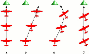
How much to the left or to the right of the object must you head? At what angle? Serious pilots use tight geometry and trigonometry computations to get near exact and optimal angles. Yet I wouldn’t fly a virtual Cessna 172p if I had to do such dry things. You need no computations at all to fly roughly straight. The trick is you must keep your eyes on the object you fly towards. You know you will head the plane in a direction to the left or to the right of the object, but you don’t need to know the angle. Just keep your eyes on the object. Get aware you are drifting leftwards or rightwards. Then let your instinct slowly head the plane to the right or to the left to compensate the obvious drift. When you begin training this, you need to force your instinct a little bit and think of what you are doing. Very soon this will become automatic, just like when you learned to fly straight. You will no more keep the plane headed towards the object. You will rather keep it flying towards the object. The picture below shows a flight towards the top of the little mountain ahead. Wind blows from the right. I just look at he mountain top. And I let my hands head the plane to right of the mountain, without really thinking about it:
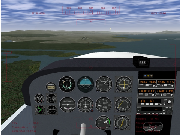
The faster the flight airspeed compared to the wind speed, the less the wind will influence.
Main recommendation to take off is you must find a way to accelerate facing the wind; with the wind blowing towards the nose of the airplane. Before most runways are build, statistics are made about the wind at that location. The runway orientation is chosen so it aligns with the wind most often. Lots of airports have two runways at different orientations because the wind sometimes blows in one of these directions and sometimes in the other direction. The location of an airport is often chosen because at that place the wind often has a stable direction and speed.
Take off with a faint wind blowing towards the rear of the airplane, say 1 knot, for sure is no problem. Yet above a few knots you can get into trouble. With a 10 knot wind blowing from the rear, the front wheel will rise at the usual 40 knots airspeed, but that makes 50 knots compared to the runway. What matters is the speed the front wheel roll over the runway, not the airspeed... If a problem occurs and you are still rolling at 60 knots on the runway, the consequences will be more dramatic. To end with, you will need much more runway length and have less opportunities to abort the landing.
The main way to know the wind direction and speed is to go to the control tower or ask the control tower by radio. A necessary and complementary tool are the windsocks at both ends of the runway. They show the wind direction and speed. The longer and the stiffer the windsock, the more wind there is. The windsock on the picture below shows an airspeed of 5 knots:
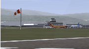
So, you have to choose a runway start that allows you to take off with the airplane facing the wind. In real life you are not always allowed to do this. Either there is no runway aligned with the wind or the control tower tells you to use another runway. Then you have to take off under crosswind; the wind blowing towards a side of the airplane.
Basically, you can use the exact same procedure as listed above for a take off when there is no crosswind. Yet you have to be aware of several important facts listed below. To train this, start FlightGear with the parameter –wind=0@10 which implies a wind of 10 knots blowing from the North (direction 0). If you take off from the usual San Francisco KSFO airport heading to the West, this makes the wind blow from the right.
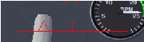
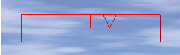
Why do you keep the yoke to the right and the rudder pedals to the left once the airplane rises in the air? This can seem odd. It’s quite logical that way the airplane will fly straight. The ailerons and the rudder compensate each other and the airplane turns neither to the right, neither to the left. But again, why do this, why not simply let the yoke/ailerons and the rudder centered? The airplane will fly straight too and be far less braked. The reason why we do this is the ailerons keep the airplane banked to the right; towards the direction the wind is blowing from. Hence, the huge force on the wings, that keeps the airplane in the air, that huge force is now slightly directed to the right. In normal circumstances this would make the airplane move slowly sideways to the right, at 10 knots speed... Currently, it compensates for the 10 knots wind and keeps the airplane above the runway. So despite the wind, the airplane stays headed towards the runway end and stays above the runway middle. Everything’s fine (except for the braking).
To me, 10 knots wind is a maximum to take off the Cessna 172p safely.
You land the Cessna 172p under crosswind the same way you take off:
Under high crosswind, hence with a strong rudder angle, the plane brakes a lot. This implies two things:
Landing that way is quite comfortable, despite the crosswind. You just have to be a bit more careful with the rudder once the airplane rolls over the runway. And best keep the ailerons as if turning towards the wind.
Note such a landing, with a steady crosswind, is unrealistic. In the real world the wind varies quickly. You get sudden increases and gusts of wind. The control tower just tells you by radio the maximum speed of the gusts. You have to adapt constantly during the landing, to react to the turbulences and gusts.
As for the take off, 10 knots wind seems a maximum to me. (Should you ever have to land under heavy wind, say 25 knots or more, and there is no runway aligned with the wind, maybe best don’t land on the runway. Or don’t try to align with the runway. Align exactly with the wind and make use of the fact you need less ground length to stop. When the plane is going to stop keep the rudder pushed. Don’t try to taxi. Simply push the parking brakes in, push the trim and get help to latch the airplane to the ground. In fun mode, landing the Cessna 172p under 70 knots wind is great. You simply let it descent to the ground vertically. This is quite unrealistic because at such a wind speed there are tremendous turbulences close to the ground.)
The technique described here is the slip landing. Another crosswind landing technique is the crab landing.
Under 10 knots wind the Cessna 172p seems not to need particular precautions when taxiing. Yet any sudden increase in wind speed can tilt it and tumble it over. So best apply the recommendations whenever there is wind.
To train taxiing on the ground when there is wind, ask for a strong wind like 20 knots. Such a wind can tilt the plane and blow it away tumbling any moment. One single error during taxiing and the plane is lost.
Main rule is you must push the yoke towards the wind. This deserves some physical explanation:
Accept the plane nose can be tilted and the tail pushed against the ground. Keep cool. This can be impressive yet there is nothing dangerous with it. Go on using the brakes, rudder and engine to move the airplane.
If you want to move towards the wind, you will need more engine power. When the wind blows from the rear you may need no engine power at all. Always keep the engine power to the minimum needed.
Especially when turning, move very slowly. Make little changes at a time. Take your time and closely survey the yoke angle. Constantly keep it pushed towards the wind. Constantly try to reduce the engine power. Keep in mind using the brakes too firmly may shortly tilt the plane at an angle that allows the wind to tilt it and blow it away.
An autopilot is not an “intelligent” pilot. It just takes over simple and wearing parts of your work as a pilot. You still are the sole real pilot aboard and have to keep aware of everything. Be prepared to shut the autopilot down. During take off and landing, relying on the autopilot would be suicidal, because you have to keep an immediate control on every function of the airplane. (Dumb autopilot systems are reported to cause less accidents than smart ones with artificial intelligence inside.)
The autopilot is that little rack to the right of the yoke:
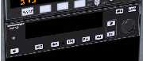
Switch it on by pressing its AP button (standard mouse mode). The autopilot then controls the roll. It keeps the wings level with the horizon. This is displayed in the picture below by the “ROL”marking. To switch the autopilot down press again on AP.

If you press the HDG button the autopilot will try to keep the plane flying towards the direction tuned on the directional gyro by the red marking (see the section 7.7.6 about direction). “HDG” stands for “heading”. Press again on the HDG button to get back to roll control mode (or AP to switch the autopilot down).
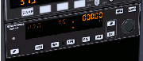
The buttons ALT, UP and DN are used to tell the autopilot either to control the vertical speed VS or the altitude ALT.
From here on you maybe better study the document used by the author of the
autopilot system in FlightGear:
https://www3.bendixking.com/servlet/com.honeywell.aes.utility
.PDFDownLoadServlet?FileName=/TechPubs/repository
/006-18034-0000_2.pdf
Security is first of all a matter of common sense. Avoid to land with the landing gear retracted. Fill the reservoirs before take off and don’t let them get empty in flight. This may seem funny recommendations, the fact remains I made several landings on the aircraft belly when I started using the flight simulator. I got angry on myself and now it nevermore happens that I forget such a simple and essential thing. In real life you are not allowed to land airplanes on the belly in order to get angry on yourself. I suppose it is a part of the role of the monitors to make you feel the angriness before your first solo landing. I suppose they don’t let somebody fly on his own till they feel the angriness is rooted deeply enough in him. People who cannot cope with this are not meant to become pilots.
There are much more vital details than the landing gear and the fuel. That’s why checklists exist. There are checklists for all kinds of normal or emergency situations. There a long checklists and short checklists. This link provides checklists for the Cessna 172p and for other airplanes: http://www.freechecklists.net/. Those checklists refer to much more levers, buttons and triggers than talked about in this tutorial. There is nothing complicated in those checklists provided you learned what all those little things are. For example one item is you have to verify the seats backs are upright.
You have to learn to cope with stress. Wherever I get access to computers I try to install FlightGear. To me the computer industry should focus solely on building computers for FlightGear. Secundary tools like browsers, mailers, spreadsheets and the like, should be regarded as optional sub-functions of FlightGear. Once the installation is finished, I make a demo flight. Strangely, most people simply don’t care about what I am doing. They just go on talking, asking questions, requesting my attention…What’s more I’m often not in the most adequate position toward the screen, the keyboard and the mouse. It becomes almost impossible to fly correctly, especially to land. Basically there are two possible attitudes. The first one is I get silently angry on the disturbing persons, I stop the demo and I consider it’s their fault if I cannot succeed my flight. The second attitude is I breath deeply and calmly, I find ways to go on managing the burdens and the problems, I don’t get angry on anybody, I claim nothing to be responsible for anything, I renounce to make a perfect demo flight and I focus on making a mediocre yet secure landing. The advantage of the first attitude is that you feel comfortable about your superiority on FlightGear-unaware persons. The disadvantage of the second attitude is that you have to endure the humiliation of an ugly landing and the people around going on talking and requesting your attention. The advantage of the second attitude is that in real life, on a real airplane, it allows you to stay alive.
Communication is a basis for security. That means communication with the technicians, with the control tower, with your copilot, with the passengers and especially with yourself. You have to constantly gather data about the traffic, the meteorology and the state of mind of your passengers. You have to constantly inform the control tower and obey the instructions it sends you in return. You have to keep your passengers in an acceptable mood and at the same time you have to obtain they let you focus on your tasks when this is necessary. Lots of airline accidents occured because of a lack of communication between the pilot and other crew members. That has been called “the Superman syndrome”. Once the problems start, the pilot focuses on his way to solve the situation. Either the copilot does not understand what the pilot is doing or he becomes aware of a danger the pilot did not realize. This results in contradictory commands sent to the airplane controls, shouting, up to fist fighting…till the final crash of the airplane. An important part of the training for modern pilots is to learn to communicate with the other crew members under high stress. They learn to go on communicating and how to do that a short and efficient way. (I was once told this anecdote: a monitor and a trainee were performing landings. The trainee was a strong guy with muscles like truck tires. At one moment the landing path appeared to be wrong. The monitor asked the trainee to release the commands so he could take them over. There is nothing wrong with failing a landing. Monitors themselves sometimes fail a landing, abort and restart a new landing. But the trainee panicked and crispated his hands on the yoke. The monitor could do nothing. The consequence was a damaged landing gear.)
There is no room for luck in real aviation. When you train to become a pilot, almost every possible situation is put into practice at least once. For example a monitor makes you take off with a heavily loaded airplane and suddenly shuts the engine down. You have to train to fly and land with a random airplane control or indicator out of order. FlightGear allows to reproduce some of these trainings. You can request flight instrument failures using FlightGears’ menus or command options. A really bad instrument failure means the instrument still seems to operate correctly. Yet it doesn’t, and what it does or displays endangers you. While training you can decide to no more use a given instrument or control. For example you can glue a sticker on your screen to hide away an instrument. Best is you ask a friend to configure a failure without you knowing what he did. This heavy training and the numerous precautions and rules are the reason why so few accidents occur. In most cases, even a severe problem does not lead to an accident. Accidents are often due to the unlucky addition of several different problems.
The picture below shows the artificial horizon indicator. I hardly never use it. I fly looking at the real horizon. Anyway the artificial horizon saved me more than once on the simulator. When you penetrate by mistake in a cloud or a bank of mist, you suddenly get a white outside. There is no more way to keep the plane flying level, except by using the artificial horizon. You may argue this due to the lack of feedback own to the simulator. You’re (dead) wrong. The same problem occurs on a real airplane. Quite many of the (very few) accidents in little airplanes like the Cessna 172 or the PA-28 happen that way. It is prohibited for a pilot with no IFR license to enter a cloud. Some do it anyway. Or they get caught in a rise of mist the control tower didn’t warn for. The airplane banks and in two minutes time it goes flying upside down. The pilot is unaware of this. Even worse: some instruments seem to get mad, with no obvious reason. A crash is unavoidable. I learned the reflex to focus on the artificial horizon, the altimeter and the directional gyro. When this happens the plane is often already severely banked. I keep calm and I use the instruments to maintain the plane in a sound flight. It will oscillate a lot but serious problems will be avoided. Either I will wait till I get out of the cloud or I will gain or loose altitude to get out of the cloud layer. I strongly advice you train this using the simulator. Best is you make a complete IFR training.
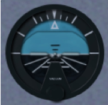
One thing you have to train for your security is landing on very short distances. Some flight incidents, like an engine failure or a sudden change in the weather, can force you to land on the first strip of flat land you encounter.
The HUD allows to fly and land more easily, with less stress. It also allows to optimize what you are doing and this is good for security. For example it allows to touch the ground very close after the beginning of the runway. That way you have the whole length of the runway to brake. (A HUD is available for every aircraft on FlightGear, even the 1903 Wright Flyer. In real life, few little civil airplanes contain a HUD. It is too expensive and too recent.)
There are some strong differences between a flight simulator with minimalistic control hardware and a real airplane. The fact the mouse exerts no counterforce, the fact you don’t feel the vibrations and forces inside the airplane…On one hand, some aspects of flying are made easier on the simulator. On the other hand, a real airplane constantly gives all sorts of valuable feedback you don’t get with a simulator. One thing is common to the simulator and the real airplane: while landing you’d wish you had four arms and two more brains.
FlightGear contains bugs. Consider those problems as a training for real aircrafts. Problems on real aircrafts are not the same. But there are problems. When FlightGear suddenly puts you in a critical situation due to a bug, consider this as a training. Try to solve the situation fast and efficiently while keeping calm. It’s not a bug, it’s a feature!
The handbooks of airplanes contain procedures and checklists for emergency situations. It sometime happens that the adequate reaction to a problem is exactly the opposite for two different airplanes. That’s one reason airline pilots are not allowed to fly different airplanes at the same time. If they choose to go flying another type of airliner, there are imposed to stop flying for a lengthy period, during which they will practice the other type of airplane on simulators. The wide range of aircrafts available under FlightGear allows you to experiment with this.
Once you master the content of this tutorial, you can claim to have a basic understanding of what piloting is about. You still lack key knowledge and training, like these:
You probably will learn to deal with a retractable landing gear system and with variable pitch propellers.
Go to the FlightGear documentation page for more tutorials and reference
pages:
http://www.flightgear.org/docs.html
These are great tutorials to learn further:
I wish to thank:
I cross-checked all the data about the Cessna 172p, a friend who is a pilot verified I did not write too blatant crap and I made numerous virtual test flights. This appendix contains less reliable data about other airplanes. It can be helpful as an introduction to those airplanes but keep in mind my only goal was to make flights that seem OK and acquire basic knowledge. You need other sources if you want to pilot these airplanes a serious way.
On Linux you get the Cherokee Warrior II (or PA-28) with the –aircraft=pa28-161 command line parameter. The Cherokee Warrior II has some advantages upon the Cessna 172p. Thanks to its low wings it is far less sensitive to crosswind. Fully extended flaps are more braking and allow to land on a much shorter distance.
Take off is the same as for the Cessna 172p (in FlightGear. In real life their take off checklists are not exactly the same).
You have to get used to some minor differences of the Cherokee Warrior II for the landing:
(In real life, an advantage of the Cessna 172p upon the Cherokee Warrior II is the fuel reservoirs of the Cessna are located in the wings close above the center of the plane and higher than the engine. What’s more an automatic system switches between the reservoirs. That makes you almost don’t have to bother for the way the fuel gets to the engine in flight. On the contrary, on the Cherokee Warrior II the reservoirs are located separately, on both wings and lower than the engine. That means you have to constantly switch between the two reservoirs in flight. Should one reservoir become much lighter than the other, this would destabilize the airplane. The fact the reservoirs are lower than the engine means you have to control the fuel pumps and the backup fuel pumps.)
Some links:
Use the –aircraft=j3cub parameter to get the Piper J3 Cub on Linux.
The Piper J3 Cub is a very different airplane from the Cessna 172p and the Cherokee Warrior II. The Cessna 172p and the Cherokee Warrior II are front wheel airplanes. While the Piper J3 Cub is a tail wheel airplane. Take off and landing with tail wheel airplanes is more difficult. You have to tightly use the rudder pedals when rolling over the runway. The yoke often needs to be pulled backwards to the maximum. I’ll discuss this more thoroughly once I get more experience and knowledge about tail wheel airplanes. The Piper J3 Cub should be a good introduction and it is quite easy to take off and land provided you follow an appropriate procedure. Stall speed seems to be a little below 40 mph (the airspeed indicator is in mph) (about 27 knots according to the HUD). I guess an appropriate speed to rise in the air is a little above 50 mph.
My take off procedure for the Piper Cub is to fully pull the yoke backwards then throttle the engine to maximum. Once the front wheels clearly rises from the ground, gently push the yoke back to neutral, towards a normal flight close above the runway. Let the plane accelerate to 50 mph. Then pull the yoke to keep a little more than 50 mph while rising in the air.
The landing procedure…well in fact there are two different landing procedures:
The take off procedure mentioned above is symmetrical to the first landing procedure. There exists a second take off procedure, symmetrical to the second landing procedure. Yet I don’t succeed it properly so I won’t write about it.
Take off on a jet is easy but you must have fast reflexes. My favorite jet on FlightGear is the A-4 Skyhawk. You get it with the –aircraft=a4-uiuc parameter on Linux, provided it is installed.
This is the “calm” procedure to take off:
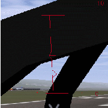
The “nervous” take off procedure is the same but you push in full engine power. The plane takes off quickly and you need to settle a very steep climb angle to keep 200 knots. Best retract the landing gear immediately.
You don’t land a jet the same way you land a little propeller airplane. My way to land the A-4, inspired by some texts I found on the Web, is this:
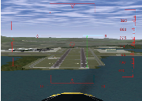
Let’s explain this. The two horizontal lines labeled “0” show the horizon line. Rather they show where the horizon would be if the Earth was flat. When your eyes aim at those “0” lines, you are looking horizontally. Look at the dotted red lines labeled “-10”. A feature on the ground situated there is situated 10∘ below the ideal horizon. In other words: when you look to objects “hidden” by the lines labeled “0”, you have to lower your eyes of 10∘ to look at objects "hidden" by the dotted lines labeled “-10”. This implies, and it is very important, that a person in a rowboat, “hidden” by the dotted lines labeled “-10”, has to rise his eyes up 10∘ to look at your plane. He sees you 10∘ above the horizon. In the picture above, the start of the runway is situated at 64% of the way towards the red “-10” dotted lines. That means you have to lower your eyes of 6,4∘ to look at the runway start. This also means that if you start now to descent towards the runway start, the descent path will be of 6,4∘ (too steep). So, the HUD allows to measure precisely the angle of the descent path. On a jet plane you need an angle of 2,5∘ (up to 3∘), that is 25% of -10∘ (up to 30%).
The HUD in a real jet contains a symbol to show towards what the airplane is moving. It is shown in the picture below. When you are flying at constant altitude, that symbol is on the ideal horizon line. Once you dive towards the runway start, you simply have to place that symbol on the runway start. This is quite an easy and precise way to aim at the runway start. (The diamond in the center of the FlightGear HUD sometimes can help but it does not have the same purpose. It shows towards what the airplane nose is pointing. For example is you descent towards the ground at low speed, the symbol would be somewhere on the ground while the FlightGear diamond will be up in the sky.) (By the way, the HUD on the virtual B-52 on FlightGear has that symbol. It is great to use while landing.)
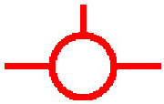
Also, a real HUD shows a dotted line at -2,5∘, to help find the correct descend path. Simply keep that dotted line too on the runway start.
In a real jet you don’t look at the airspeed indicator to land. Rather you look at a tool on the HUD or at the set of three lamps shown below. When the upper ∨ is on, this means the speed is too slow. When the lower ∧ is on, the speed is too fast. The center ○ means the speed is OK. This indicator exists in FlightGear. On FlightGear version 0.9.8 it seems to have wrong speeds tuned in so I didn’t use it. On FlightGear version 0.9.9 it seems OK. This indicator does not rely on the speed itself. Rather it relies on the AOA. That is the Angle Of Attack, the angle at which the wings are pitched up against the relative airstream. There is a close link between the AOA and the speed. I suppose the advantage of the AOA indicator is that the optimal AOA does not depend on the plane load. While the speed does. By tuning the correct AOA, always the same for every landing, you get the optimal speed whatever the plane load. (The A-4 on FlightGear has also an AOA indicator but I don’t understand its output.)
The Cessna 172 and the A-4 Skyhawk are two extremes. Most other airplanes are in-between these two extremes. If you trained them both (and one or two tail wheel airplanes), you should be able to find out how to take off and land most other airplanes.
160 knots seems an appropriate landing speed for the F-16 Falcon. Also you need to throttle down the engine to minimum just before the plane should touch the runway. Otherwise it will hover over the runway. Don’t bother for the flaps. It seems they are deployed automatically with the landing gear. (Read the section 7.7.4 about the stall).
140 up to 150 knots and all 8 flaps steps deployed seem appropriate to land the virtual Boeing 737. But don’t trust me especially on that one. I just made a few experiments and didn’t search for serious data. The landing speed varies a lot depending on the plane load, I suppose 140 knots is for a plane with no load. The Boeing 737 seems to like a gentle rounding before the wheels touch the runway. Start the rounding early.
In the take off procedure for the Cessna 172 and the A-4 Skyhawk I recommend you pull the yoke/mouse/elevator to 1 2 the total way, from the start on. This seems to be a bad practice on the Pilatus PC-7. Keep the elevator neutral. Let the plane accelerate and wait till the speed gets over 100 knots. Then pull calmly on the yoke. During landing, deploy full flaps once you start plunging to the runway but don’t decrease the engine throttle. Decrease it only when the hovering above the runway starts. 100 knots seems a good landing speed.
For the Cessna 310 too you better leave the elevator neutral during the acceleration on the runway. The plane will raise its nose by its own provided you deployed one flaps step. (If you keep the yoke pulled from the start on, the nose will rise sooner and you will get yawful yaw problems.)
(Some virtual airplanes, like some big airliners or fast aircraft, need faster physical computations. Then add the –model-hz=480 parameter to the command line. If the plane is difficult to control during landings, try this.)
The angle at which you land a Cessna 172p is far steeper than the narrow 2,5∘ for a jet. Nevertheless you are allowed to land the Cessna at a narrow angle too. (Provided the terrain around the runway allows for this, of course.) If you have passengers who have ears problems with the variation of air pressure…
Should you ever get a chance to pilot a P-51 Mustang, just say no. It is quite dangerous to take off and land. That’s the kind of airplane you fly only when your country is in danger. You need a lot of training. Yet once in the air the P-51 Mustang seems no more dangerous to its pilot than other common military airplanes. It is quite easy to pilot.
At low and medium altitude the P-51 wasn’t better than the Spitfire and the Messerschmitts. The big difference was at high altitude. The P-51 kept efficient and maneuverable while enemy fighters were just capable to hang in the air. This was an advantage at medium altitude too because the P-51 was able to plunge towards enemy airplanes from high altitude. Another key difference was the P-51 is very streamlined. Hence it was capable to fly much further than the Spitfire. These two differences let the P-51 Mustang fulfill its purpose: escort Allied bombers all the way to their targets in Germany. This allowed the bombings to be much more efficient and contributed to the defeat of the Nazis.
To get the The P-51D Mustang in Linux use the –aircraft=p51d command line parameter.
To take off the P-51D Mustang in FlightGear, deploy one flaps step, pull and keep the yoke completely backwards, push the engine throttle to maximum and keep the left mouse button pressed to control the rudder and keep on the runway. Once you reach exactly 100 mph, suddenly push the rudder 1/3 of its total way to the right. Immediately release the left mouse button and push the yoke to rise the tail (don’t push it too much, as the sooner the wheels leave the ground the better). From now on, keep the left mouse button released. Only make very short adjustments to the rudder. Let the plane rise from the runway and get to altitude at a speed of say 150 mph. Don’t forget to retract the landing gear and the flaps.
Don’t make too steep turns. You would loose control on the plane and crash.
To land, deploy full flaps and lower the landing gear from the start on. 130 mph speed seems fine, up to 140 mph. Make an approach from 1,000 feet altitude and a dive at a low angle, like for a jet. Once over the runway, shut the engine down completely (key{). Don’t hover over the runway. Get the wheels rolling soon (like for a jet). Hold the left mouse button down to steer the plane using the rudder. Once the tail sinks in, briskly pull the yoke (left mouse button shortly released) to force the tail on the runway. Go on steering the plane using the rudder. Now the tail is firmly on the ground, use the brakes if you want.
The B-52F bomber implemented in FlightGearis a success. It is one of my favorite airplanes. I’m sorry it was conceived to terrify me. One single B-52 bomber can wipe out every main town of my country and rise a nightmare of sicknesses and children malformation for centuries. All B-52 bombers united can wipe out mankind and almost every kinds of plants and animals on Earth.
The differences between the virtual B-52F bomber and the Cessna 172p are these:
This is my procedure to take off the virtual B-52F:
To land, the B-52F’s HUD offers that great airplane-shaped symbol I talked about in the section about jets. So you just have to put that symbol on the airplane threshold (a few pixels further seems optimal) and keep the runway start 2,5∘ below the ideal horizon line. 130 up to 140 knots seems a good landing speed. (Instead of the speed you can make use of the AOA indicator displayed on the schematic instrument panel (P). ). Simply keep the AOA at 3∘. I must confess I prefer to tune the speed rather than the AOA.) If the plane gets to the runway at 130 up to 140 knots, simply “let it smash” on the runway. Otherwise, if the speed is higher, make a rounding and a short hover. The brakes seem to be very effective b). They allow to stop the B-52F on roughly the same short runway length as the Cessna 172p.
Replays of the flights are a delight. They allow to check the plane body left the runway and landed back parallel with it. One of the points of view is situated inside the B-52F rear turret, which allows you to be your own passenger and to compare what you see with what you experienced as a passenger in airliners. The key K allows to visualize the airplane trajectory.
To cause an accident with the B-52 do this: